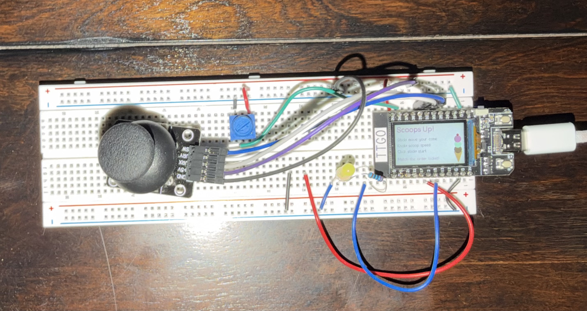
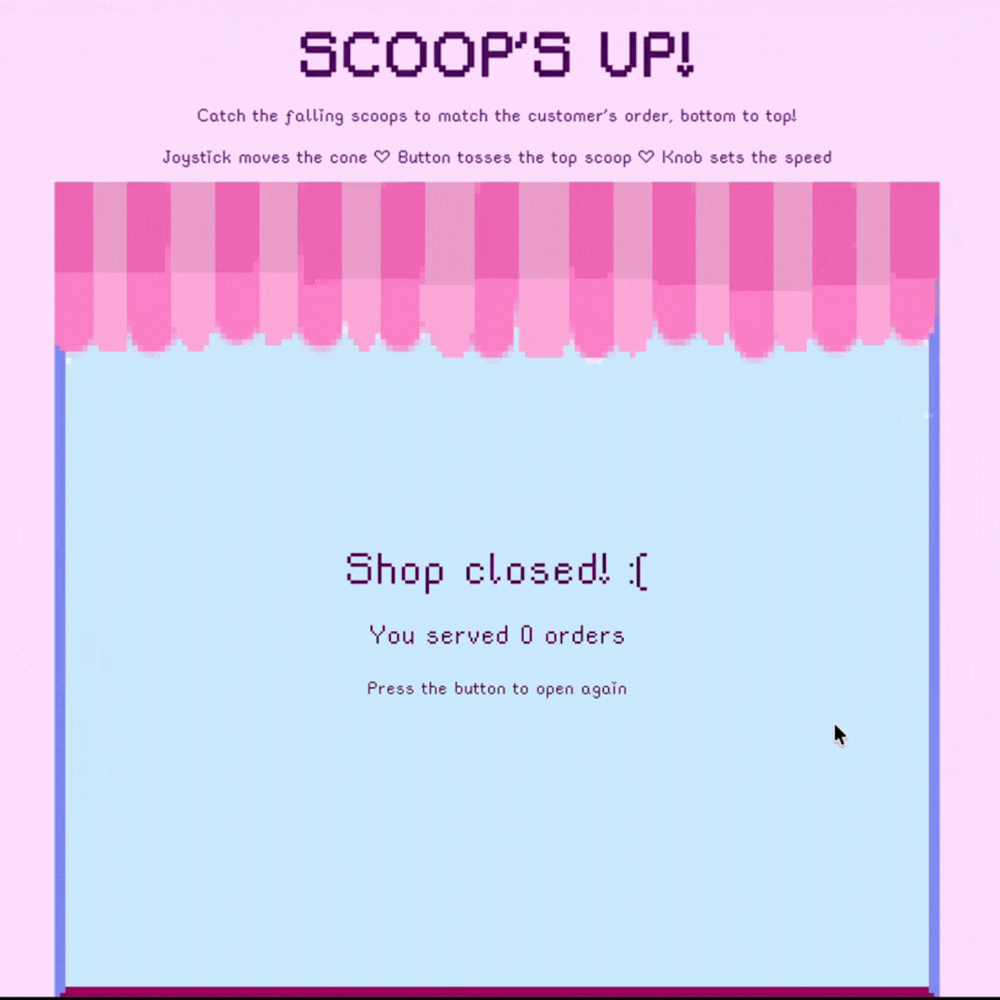

Scoop's Up
Summary
I built an ice cream stacking game where random scoops fall from the top of the screen, and the player has to move an ice cream cone left or right to catch the right flavors and build a customer's order from the bottom up. The scoops are drawn using random flavor values, and I used a potentiometer knob to control how fast the scoops fall. If you accidentally catch the wrong flavor, you can just press a button to toss the top scoop off the cone. The game displays everything next to a panel that tracks customer patience, order tickets, and your score. The game is over once 3 "customers" or order tickets are missed.
Inspiration & Motivations
This project was inspired by the Papa Louie: Burgerzilla mini-game and classic arcade games. I decided to switch from a burger theme to an ice cream shop because I really like the pastel aesthetic of ice cream. I also wanted to add an order element, which the original Burgerzilla game doesn't have, so I could incorporate the button mechanic and let players toss away mistakes when completing customer orders. Using an ESP32 joystick, knob, and button made it possible to translate physical controls into game mechanics for moving the cone, adjusting speed (and difficulty), fixing mistakes and starting over.
Technical Implementation
Wiring & Physical Components
- LILYGO TTGO T-Display (ESP32)
- Breadboard
- Potentiometer
- Joystick (with built-in push switch)
- 14 jumper wires
- USB-C cable

The joystick and the potentiometer both get power from the ESP32's 3V pin and share its GND. Here's where each component goes:
- Joystick VRx G39 left/right
- Joystick VRy G32 up/down
- Joystick SW G33 press the stick (the button)
- Pot middle leg G36 scoop speed
- Pot outer legs 3V + GND
- Joystick +5V / GND 3V + GND
Pins 39, 32, and 36 can read analog inputs, that the joystick axes and potentiometer need. The switch only needs on/off (1/0), so it's connected to G33 as a digital input.
From Hardware to Data
Turning the potentiometer or moving the joystick changes its voltage, and the ESP32 converts this voltage into a number from 0 to 4095.
The switch is wired using INPUT_PULLUP. This holds the pin at 1 until you press the stick down and connect it to GND, making it read 0.
Every time loop() runs, the code reads all four controls and stores each in its own variable (xVal, yVal, zVal, potVal). It then prints them as one comma-separated line, like 2051,1987,1,3200, and waits a moment before reading again.
The display screen shows ice cream themed instructions, drawn once in setup().
Using the Data
On your laptop, sketch.js connects to the ESP32 with the Web Serial API (Chrome/Edge) at 9600 baud, matching the ESP32. readLoop() collects the incoming information and splits it into lines, then parseLine() splits each line at the commas and stores the four values into global variables (joyX, joyY, btn, pot). It also flips the switch value so pressed = 1.
draw() uses the most recent values at every frame:
- Joystick X: converted to approximately -1 to 1 that slides the cone left and right.
- Potentiometer: mapped from 0–4095 to a fall speed of 2–9.
- Switch: counts once per press to toss the top scoop, or restart.
Testing: Before vs. Now
To get started, I used Google Gemini to build a simple tower stacking game. I kept the stacking logic and adapted the rest with my own art and ice cream shop theme, and added new mechanics. In the original, one object slides side to side at the top of the screen and you press to "drop" it onto the tower. In mine, the scoops "rain" down from the sky and you race to catch them with the cone.
I originally built and tested the game without the breadboard or any physical components. I used keyboard controls that set the same variables the ESP32 would, using the same 0–4095 range, so the game didn't depend on any specific inputs.
Before: the arrow keys could push the cone left or right, the speed knob was the +/- keys, and space was the button.
Now: once you click "Connect ESP32," the keyboard is no longer used and the ESP32 readings are used instead. The joystick moves the cone, while the potentiometer changes speed. Because both versions used the same variables, switching to reading hardware data did not require me to change any of the core game logic.
Game Logic
Each customer order is a list of random flavors, read from the bottom of the cone up. The scoops fall one at a time, and 40% of them are guaranteed to be the flavor you need next so the game can stay playable.
Scoops land when they cross the top of the stack while lined up with the top scoop. If it doesn't, it keeps falling past the cone. Every caught scoop is checked against the order. Wrong flavors show "Wrong flavor! Toss it," and clicking the stick pops the top scoop off.
Every scoop that falls, caught or missed, uses up some of the customer's patience. If patience runs out, the customer leaves and you get a strike, and 3 strikes closes the shop. Each order you finish makes the next one a scoop longer, and the screen scrolls up as the tower grows.
Obstacles & How I Fixed Them
Using the ESP32 data was my biggest issue. My first ESP32 code used pins that didn't match my wiring: the potentiometer was set to G37, which wasn't usable, and the joystick switch was being read as an analog input instead of a digital one. I fixed it by matching every pin in the code to the real wiring (39, 32, 33, 36).
I also ran into wiring problems. I mixed up the power and ground rails on the breadboard, so the ESP32 wasn't reading real data: the X and Y values were stuck at 4095, and pressing the switch didn't change anything. When I rewired everything from scratch, I caught the mistake and connected each component correctly, following the wiring diagram from Lab 2.
Data in the wrong order. Once the board was reading and sending data correctly, the game was reading it wrong. The ESP32 sent x,y,z,pot, so I rewrote parseLine() to read the values in the right order.
How It Came Together

Next Steps
Next time, I want to refine the gameplay logic, so instead of having the potentiometer just control speed, I could use it to scale overall difficulty by adding more ice cream flavors and decreasing customer patience over time. Since the game is a bit difficult right now, I can also improve the scoop generating system so it isn't purely random, guaranteeing that every order ticket is actually possible to complete. As for the physical set up, now that I know how to use the ESP32 to simulate a game controller, It'd be cool to design and 3D print a small handheld controller box to house the ESP32, joystick, knob, and button, making the setup more portable and easier to play with.